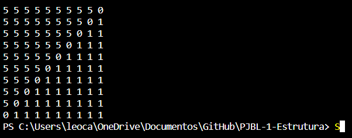
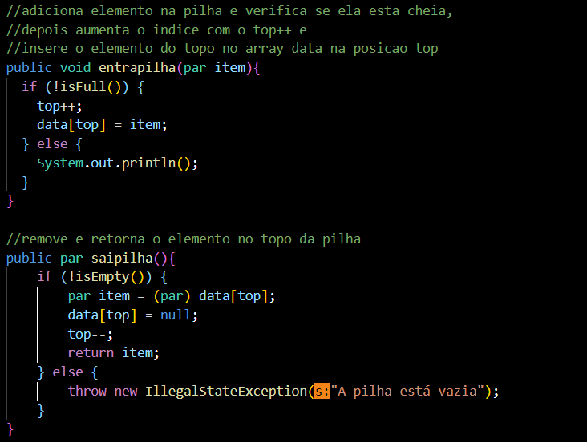
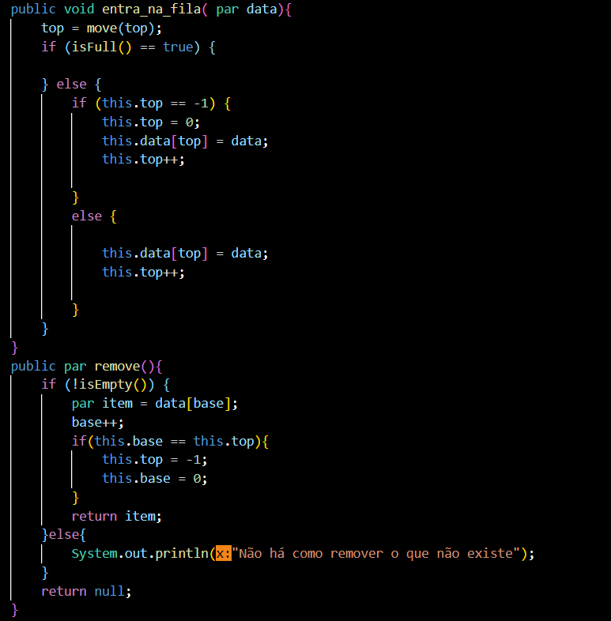

Titulo
O trabalho foi desenvolvido na linguagem de programação Java.
Este trabalho tem como objetivo desenvolver um progrma FloodFill aplicado com listas lineares.
Ao executar o programa, o usuário deve inserir como entrada as coordenadas X e Y e a cor para qual sera alterada
Ao final o programa mostra a matriz com a nova cor.
Pilha: a pilha sempre executa a ultima cordenada a ser executada (LIFO)
Fila: a fila sempre executa a primeira cordenada a ser armazenada (FIFO)
Por fim o resultado é mostrado: